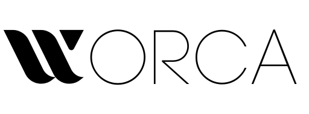

Deterministic multi-agent pipeline for AI agentsEight things a chat window with a model can't do.
One agent.
One loop.
One person.
Pipelines of agents.
Gates, budgets, policy.
For a project and a team.
Autonomous end-to-end — you open the gates that matter.
The work has a shape you can see, edit and version.
The graph grows at runtime — one agent per task.
Per step. Per model. Per agent. Before the invoice.
Spot the step that burns 60% of the budget.
Set a budget — the run stops itself.
Judgment is expensive — buy it per token.
Bulk work — run cheaper on-prem.
Chores are free — run them locally.
Start, question, nudge, approve — from chat.
Replies flow back into the run.
Not one laptop. A shared, visible activity.
Pick a guardrail set when you start — Normal, Strict, or your own.
Every agent the run spawns gets the same rules — denies + scrubbed env.
Lower scopes can add rules, never remove them. The set is on the run's record.
Every run works in its own cloned tree.
A bad run is discarded with zero blast radius.
Many runs, one repo, no collisions.
A conversation over every run, log, cost and diff.
Answers grounded in actual run data.
An audit trail you actually use.